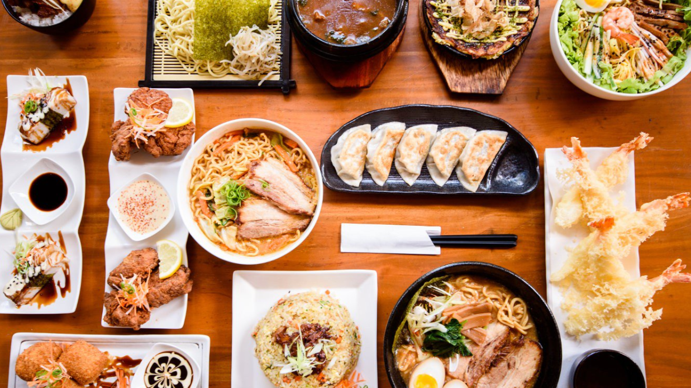
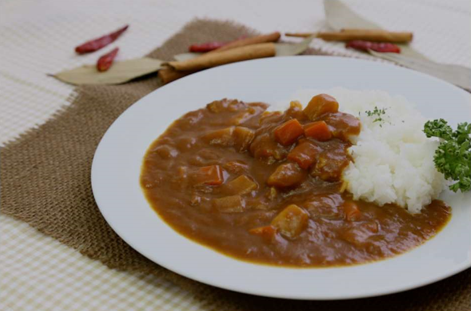
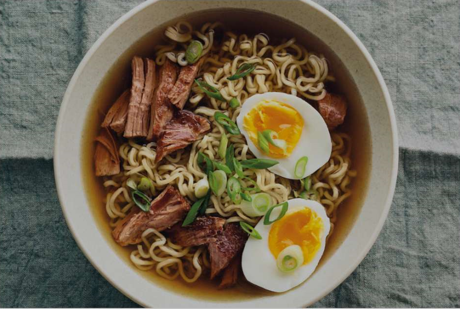

- Viajes Gastronomicos por el Mundo
Viajar es un verdadero festín para los sentidos. Cada aventura es una oportunidad única para descubrir la diversidad culinaria de nuestro planeta.
Desde saborear los exquisitos platos locales en puestos callejeros hasta deleitarse con las creaciones de chefs renombrados en restaurantes de renombre,
cada bocado nos transporta a una nueva cultura y nos conecta con las historias y tradiciones que dan forma a la comida del mundo.
¡Acompáñame en un viaje culinario que promete explorar el mundo a través del paladar!

Datos Generales
Una de las partes esenciales de cualquier viaje indudablemente es la comida. Explorar la gastronomía del destino es una forma auténtica de sumergirse en su cultura. En este sentido, Japón se destaca como uno de los destinos más destacados para los amantes de la comida. Su dieta es ampliamente reconocida como una de las mejores, si no la mejor, en todo el mundo, y muchos atribuyen la longevidad de los japoneses a su alimentación.
Contrariamente a lo que algunas personas pueden creer, la cocina japonesa está repleta de platos simples pero deliciosos que son accesibles para casi todos los gustos.
Arroz con CurryEste plato no tiene mucho misterio pues el nombre es bastante descriptivo: arroz con curry. Pero la gracia de este plato esta en la flexibilidad que permite en cuánto a los ingredientes: puedes hacerlo prácticamente al gusto. Aunque quizás de lo más tipico seria ponerle patata, zanahoria, cebolla y carne. También puedes elegir el grado de picante que quieres, o si lo quieres más bien dulce y nada picante.

|
RamenSimplificándolo mucho, podríamos decir que es una sopa de fideos. El caldo puede ser de tres sabores: shio (sal marina), shoyu (salsa se soja) o miso. Además de los fideos suele llevar carne, un huevo cocido y cebollines. En muchos sitios tambiéb vemos bambú y espinacas.

|
TokoyakiBásicamente, los takoyakis son bolas de masa de harina de trigo con agua con trozos de pulpo por dentro. Son muy típicos en la región de Kansai, sobretodo en Osaka. 
|